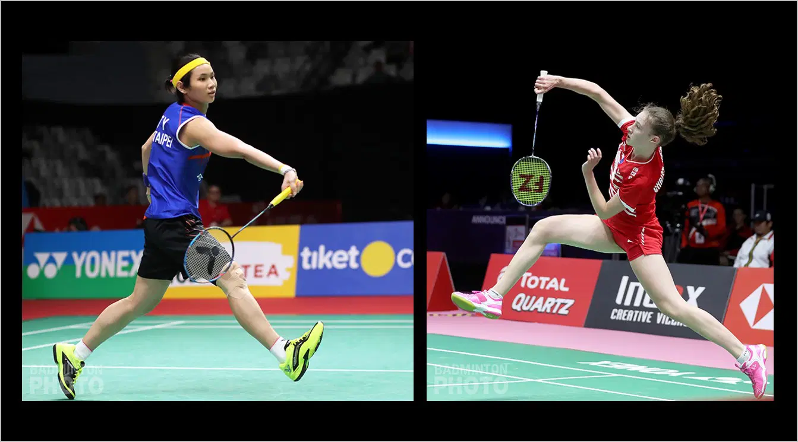
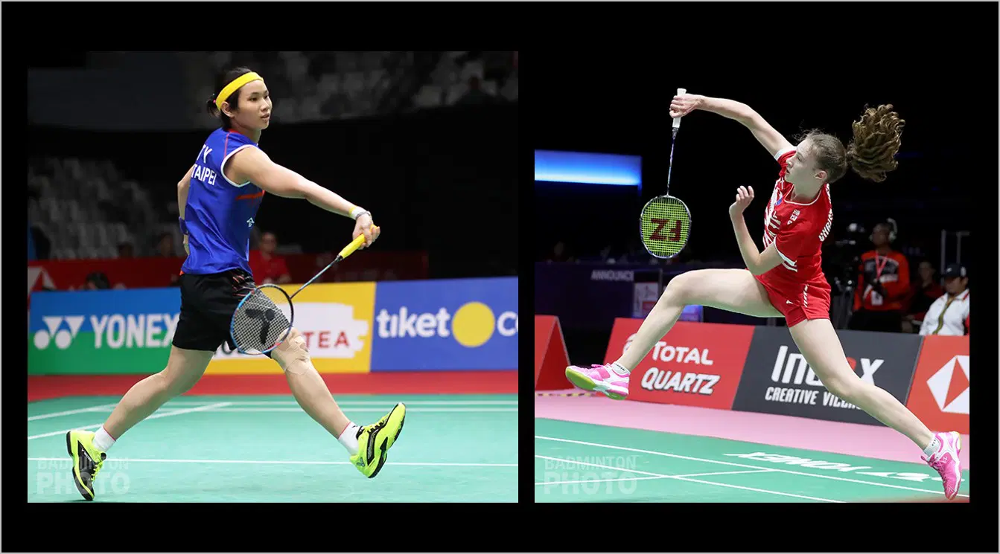

Unit Kegiatan Mahasiswa LP3I Cimahi
Unit Kegiatan Mahasiswa (UKM) adalah inti dari kehidupan kampus yang beragam dan dinamis. Mereka merupakan kelompok mahasiswa yang bermotivasi tinggi dan bersatu dalam minat bersama, menciptakan lingkungan yang mendukung pertumbuhan pribadi, eksplorasi minat, serta interaksi sosial yang berharga. Dalam narasi yang lebih mendalam, mari kita eksplorasi bagaimana UKM mengisi warna dan kehidupan dalam sebuah kampus.
UKM adalah semacam jembatan antara kurikulum akademik dan pengalaman kehidupan nyata di kampus. Mereka mencakup berbagai minat dan bakat, mulai dari olahraga, seni, keilmuan, hingga kegiatan sosial. Misalnya, ada UKM olahraga yang memungkinkan mahasiswa untuk terlibat dalam berbagai cabang olahraga, dari sepak bola hingga bulu tangkis. UKM seni menggabungkan pecinta musik, teater, tari, dan seni visual, menciptakan peluang bagi mereka untuk berkolaborasi dan tampil di berbagai acara kampus.
UKM juga memiliki aspek pendidikan dan pengembangan diri. Beberapa UKM mengadakan seminar, lokakarya, atau diskusi yang mendalam tentang topik-topik tertentu, sehingga mahasiswa dapat memperluas pengetahuan mereka di luar ruang kelas. Ada juga UKM yang fokus pada pemberdayaan sosial, seperti UKM peduli lingkungan, yang mendorong kesadaran tentang isu-isu lingkungan dan berpartisipasi dalam kegiatan-kegiatan yang mendukung keberlanjutan.
Selain itu, UKM juga sering terlibar dalam kegiatan-kegiatan di luar kampus, seperti turnamen, kompetisi, atau pameran yang menghadirkan kesempatan untuk berkompetisi dengan universitas lain, memperlihatkan bakat, atau bahkan berkontribusi pada komunitas lokal melalui proyek amal.
UKM adalah wadah yang menciptakan ikatan sosial yang kuat di antara mahasiswa. Mereka memungkinkan mahasiswa dari berbagai latar belakang untuk berkumpul, berinteraksi, dan mengembangkan persahabatan yang kuat. Ini tidak hanya menciptakan hubungan yang berarti selama masa kuliah, tetapi juga dapat berlanjut hingga setelah lulus.
Dengan demikian, Unit Kegiatan Mahasiswa bukan hanya tentang kegiatan ekstrakurikuler biasa, tetapi juga merupakan pilar penting dalam pengalaman kampus yang mendalam. Mereka memungkinkan mahasiswa untuk merasakan pertumbuhan pribadi, pengembangan bakat, pengalaman praktis, dan jaringan sosial yang tak ternilai harganya. UKM menciptakan kehidupan kampus yang berwarna, bersemangat, dan penuh dengan kesempatan untuk mengejar apa pun yang dicita-citakan oleh mahasiswa selama masa studi mereka.